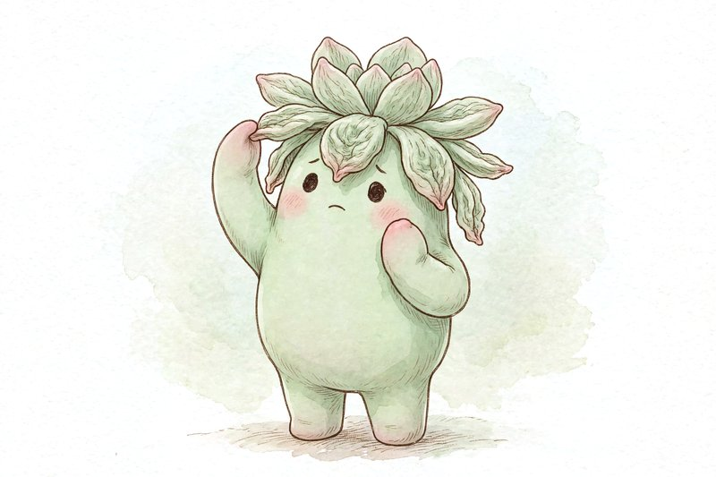
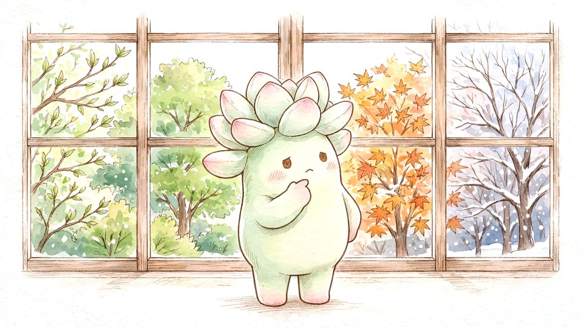

土の中は乾いていますか？
土の表面が乾いていても、鉢の底には水分が残っていることがあります。水を与えた直後と乾いた時の鉢の重さを覚えておくと、違いを感じ取りやすくなります。竹串を根に気をつけて土に差し、抜いたときの湿り気を確認する方法もあります。
迷ったら、まず鉢の中の乾き具合を確認。
水やりのタイミングは、土と多肉の様子から決めましょう。
根の周囲まで水が届き、
余分な水は鉢底から流れる。
根の吸水や蒸発によって
土の水分が減っていく。
中まで乾いたか確かめ、
葉や季節の様子も見る。
土の表面が乾いていても、鉢の底には水分が残っていることがあります。水を与えた直後と乾いた時の鉢の重さを覚えておくと、違いを感じ取りやすくなります。竹串を根に気をつけて土に差し、抜いたときの湿り気を確認する方法もあります。
迷ったら、まず鉢の中の乾き具合を確認。

多肉は葉や茎などに水を蓄えています。水分が減ると、葉のハリがなくなったり、しわが出たりすることがあります。土が乾いていて元気に育つ時期なら、給水を考える目安になります。ただし、根が傷んで吸水できない場合にも葉はしぼみます。
土が湿っているのに葉がしぼむ時は、水を足す前に根を疑いましょう。
生育期は土全体にゆっくり水を与え、鉢底から余分な水を流しましょう。水が抜けると土の粒の隙間に空気が戻り、根は呼吸できます。少量ずつ何度も与えて土が湿ったままだと、酸素が不足し、根が傷みやすくなります。
受け皿にたまった水は捨て、次の給水まで乾かしましょう。

よく育つ季節は乾きを見て給水し、暑さや寒さで成長が鈍る時期は間隔や量を調整します。暑い日は涼しい時間帯に、寒い日は凍結のおそれがない暖かい時間に。品種や置き場所で変わります。
細口の水差しなら株元を狙いやすく、葉の間に水がたまりにくくなります。底面給水も選択肢の一つ。必要な水が行き渡ったら鉢を引き上げ、しっかり水を切ります。水に浸したままにしないようにしましょう。